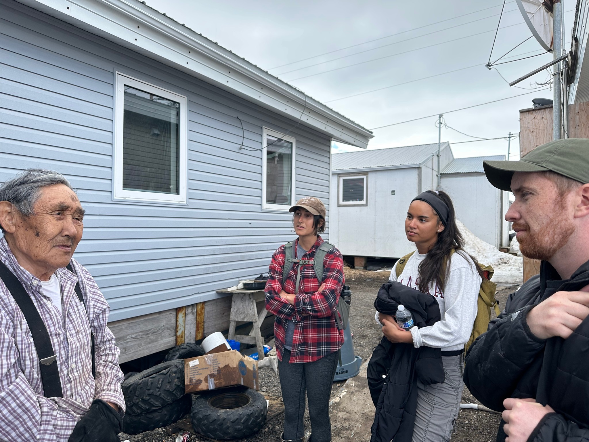
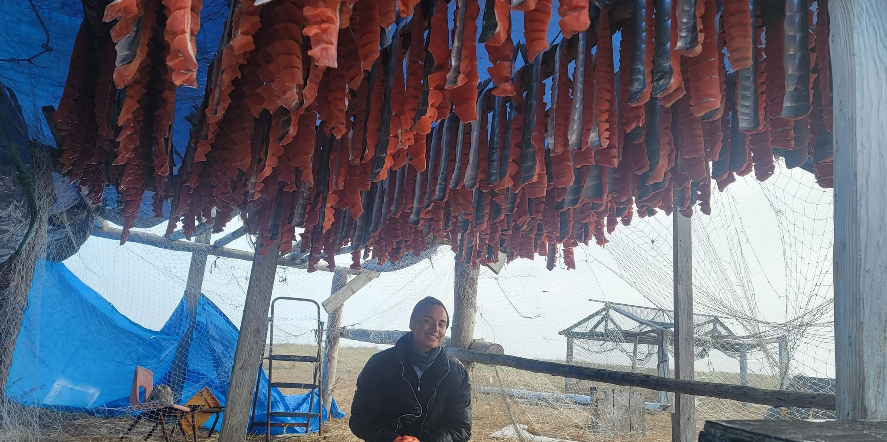
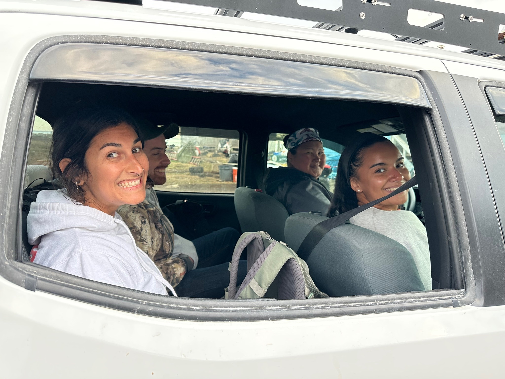
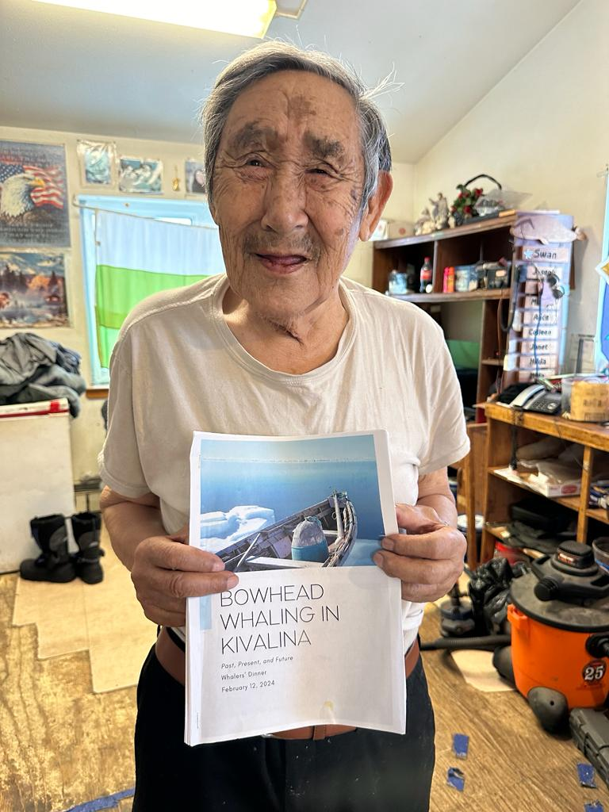

Kivalina
Bowhead Whaling in a Sea Ice Reduced Environment
Master's Thesis · School of Marine and Environmental Affairs · University of Washington

My master's thesis at the School of Marine and Environmental Affairs (SMEA) at the University of Washington was a community-engaged research project to document and understand the challenges of bowhead whaling in a sea ice reduced environment for the Iñupiat community of Kivalina, Alaska. Working with my advisor — who has a longstanding partnership with the Kivalina Search and Rescue Volunteer team — I interviewed eight whalers to document how changing ice conditions are reshaping a practice that is central to food security, cultural identity, and community life.
Program: School of Marine and Environmental Affairs (SMEA), University of Washington
Field Visits: June 2023 (interviews + community engagement) · February 2024 (findings dinner + follow-up)
Methods: Semi-structured interviews with 8 whalers, community-engaged research design
Status: Working toward publication
June 2023 — First Visit
During the first visit in June 2023, we spent several weeks immersed in the community. We conducted interviews with eight bowhead whalers who shared their observations of how declining sea ice, changing weather patterns, and shifting whale migration routes are affecting the hunt. But community-engaged research means being more than a researcher — it means showing up and being part of the community.
We got into the community and helped out with an assortment of things. The best way to get to know people was helping cut fish until 3 AM — one of my favorite memories. We also helped put on a SAR wilderness training to give hunters CPR and other certifications.





February 2024 — Sharing Back Findings
We returned to Kivalina in February 2024 to share back our preliminary findings at a whalers' dinner. This was an important step in the community-engaged process — bringing the research full circle by presenting what we'd heard and learned, getting feedback, and making sure the community's voices were accurately represented. We also conducted one additional interview during this visit.
A few whaling crew members even attended my thesis defense via Zoom at UW, which was incredibly meaningful. That kind of continued engagement shows the strength of the relationship and the community's investment in seeing their knowledge contribute to the broader conversation about Arctic change.

Community Engagement & SAR Training
One of my proudest contributions from this project was helping organize a Search and Rescue (SAR) wilderness training in collaboration with the Kivalina SAR Volunteer team. The training provided hunters and community members with CPR certifications and other wilderness safety skills. It's a small but meaningful way to give back and ensure that the people who spend the most time on the land and ice are prepared for emergencies.
Looking Ahead
I am currently working on submitting my thesis for publication and hope to return to Kivalina soon. This project laid the foundation for my ongoing commitment to research that is rooted in community partnerships and directed toward real-world outcomes for the people most affected by Arctic change.